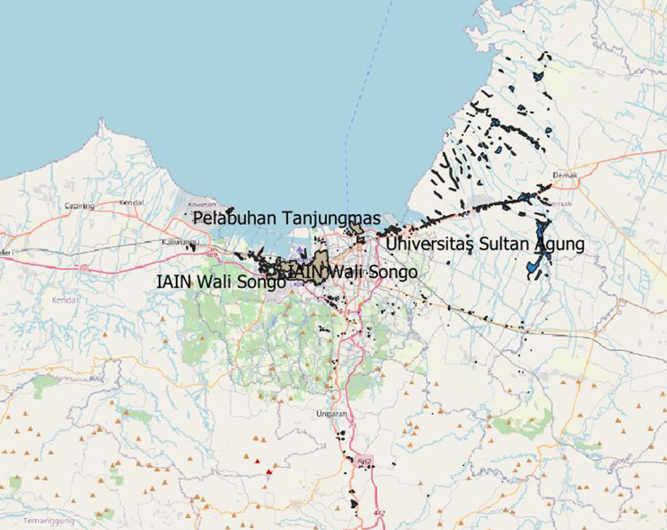
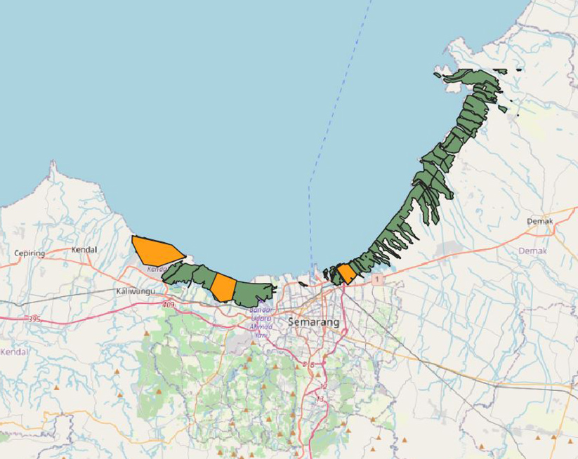

Kota Semarang (bahasa Jawa: ꦏꦸꦛꦱꦼꦩꦫꦁ, translit. Kutha Semarang) adalah ibu kota Provinsi Jawa Tengah, Indonesia sekaligus kota metropolitan terbesar kelima di Indonesia sesudah Jakarta, Surabaya, Medan, dan Bandung. Sebagai salah satu kota paling berkembang di Pulau Jawa, Kota Semarang mempunyai jumlah penduduk lebih dari 1,7 juta jiwa dan siang hari bisa mencapai 2 juta jiwa.
Hendrar Prihadi, S.E., M.M.
Walikota Semarang
Lahir di Semarang, Jawa Tengah, 30 Maret 1971, umur 49 tahun. Dia adalah Wali Kota Semarang yang menjabat sejak 17 Februari 2016. Sebelumnya, ia pernah menjabat sebagai Wali Kota Semarang periode 2013-2015 dan Wakil Wali Kota periode 2010-2013.

ir. hj. Hevearita Gunaryanti Rahayu
Wakil Walikota Semarang
Dirut PT Sarana Patra Hulu Cepu sejak 2006. Sebelumnya, bekerja di bagian financial insitution di bank, dan telah menjabat selama 10 tahun bekerja di BUMD Pemprov Jateng.